1. Resumen del laboratorio
Se crea una Function App, se publica una función HTTP llamada GetStatus, se prueba desde el navegador y se revisa su actividad en Application Insights.
| Elemento | Configuración |
|---|---|
| Grupo de recursos | rg-gp-functions-endpoint |
| Function App | func-gp-endpoint-gsc |
| Plan utilizado | Consumo (Windows), plan Y1 |
| Función | GetStatus · HTTP trigger |
| Monitorización | Application Insights |
2. Ejercicio 1: Crear la aplicación de funciones
Las instrucciones proponían el plan Consumo flexible (Flex Consumption). La suscripción de prueba gratuita no era compatible, así que para completar el laboratorio se cambió a Consumo (Windows). La aplicación quedó creada y en ejecución.
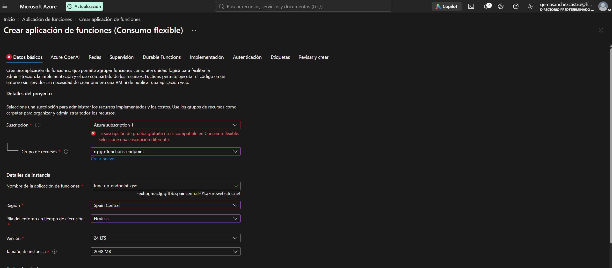
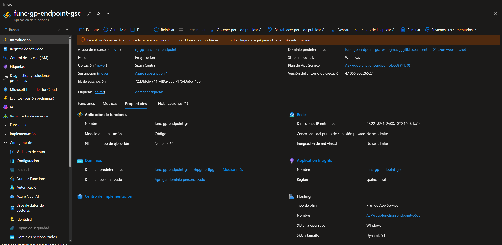
3. Ejercicio 2: Crear y publicar GetStatus
Se inicializa el proyecto de Functions con Node.js, se crea el desencadenador HTTP y se publica en la Function App. El primer intento mostró un error de configuración del almacenamiento del host; después de resolverlo, la publicación terminó correctamente.
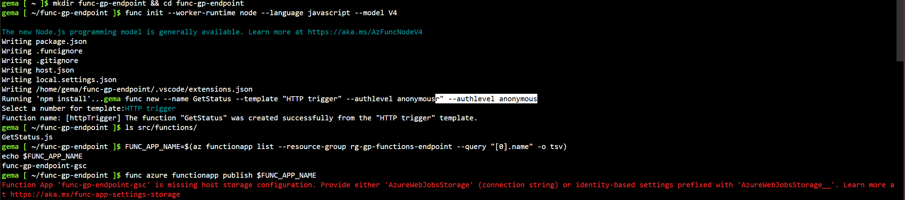
AzureWebJobsStorage o una configuración basada en identidad.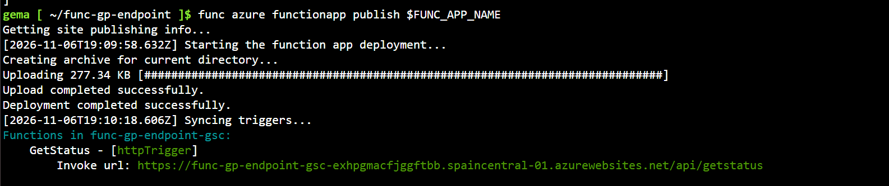
GetStatus como httpTrigger y muestra su URL de invocación.4. Ejercicio 3: Probar, proteger y monitorizar
Probar el endpoint y verificar la función
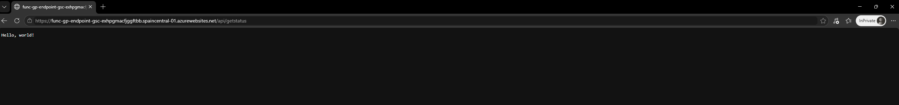
Hello, world! en el navegador.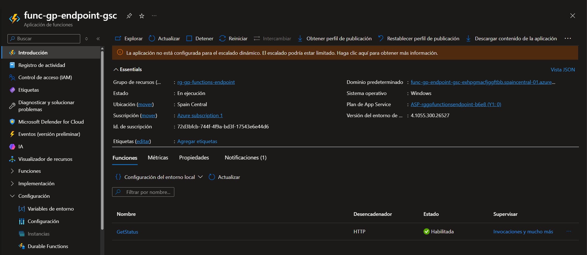
GetStatus habilitada y su desencadenador HTTP.Verificar la conexión de monitorización
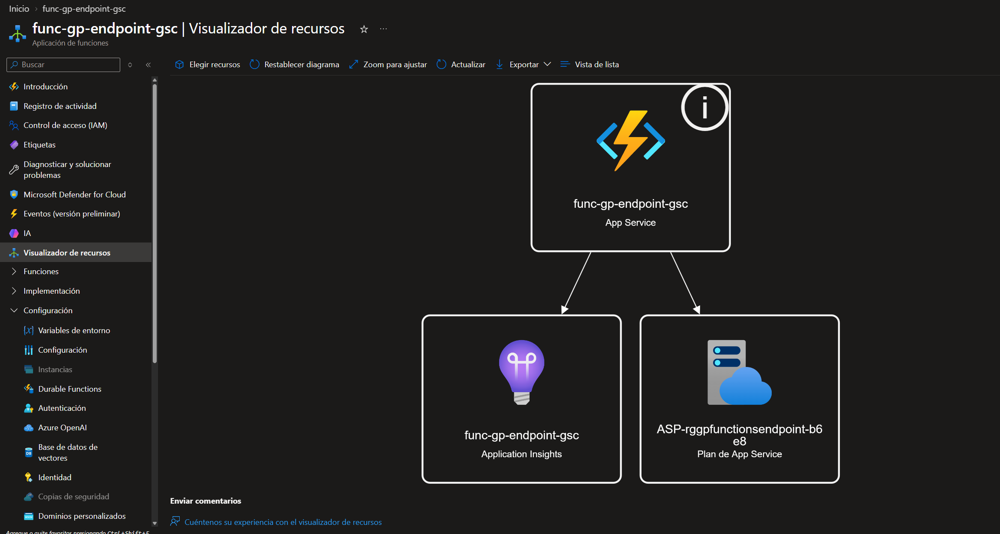
Restringir el acceso y probar con una clave
Se cambia el nivel de autorización de anonymous a function y se vuelve a publicar. A partir de ese cambio, la función requiere una clave para autorizar la llamada. La evidencia recibida muestra una respuesta correcta con clave; no se aportó una captura del error 401 sin clave.
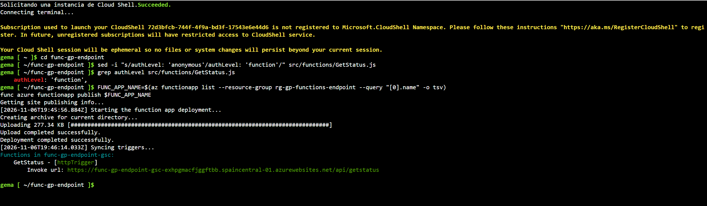
authLevel: 'function' y la publicación actualizada.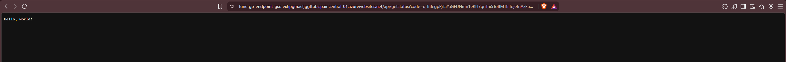
Hello, world!. La clave debe quedar oculta en la imagen que se suba.Revisar los registros de invocación
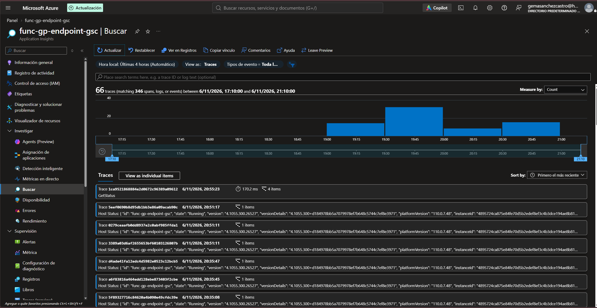
GetStatus.5. Limpieza de recursos
Al terminar, se elimina el grupo de recursos del laboratorio y la carpeta del proyecto de Cloud Shell para no dejar recursos o archivos temporales.
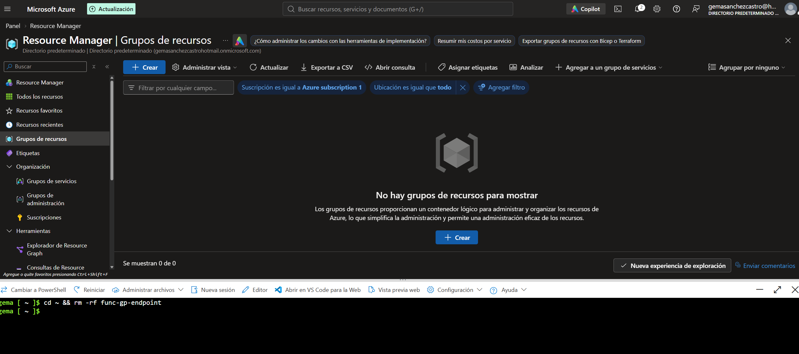
func-gp-endpoint.